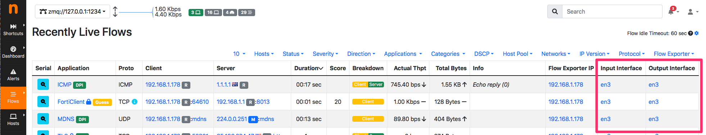
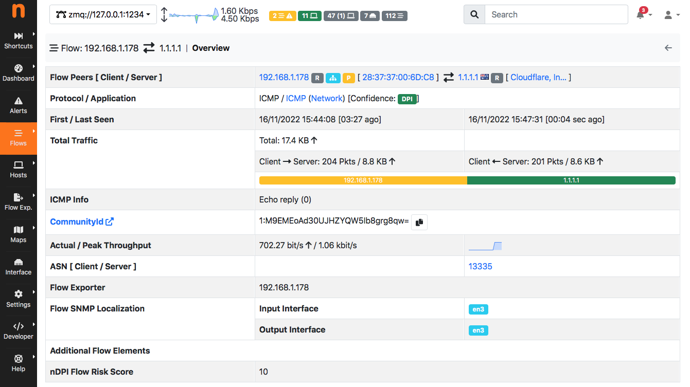

Настройка nProbe Производительность
Поскольку nProbe можно развернуть в самых разных средах, необходимо настроить его в соответствии с сетью, в которой он активен. Чтобы добиться хорошей настройки датчика, необходимо понять, как nProbe работает внутри. Каждый захваченный пакет анализируется, связывается с потоком и сохраняется в хэше. Периодически хэш анализируется и создаются просроченные потоки. Размер хеша является статическим (флаг -w), поскольку это позволяет nProbe: Выделяйте всю необходимую память при запуске (это обязательно во встраиваемых системах, где память ограничена и при запуске необходимо знать, может ли определенное приложение работать с доступными ресурсами). Избегайте исчерпания всей доступной памяти в случае атак, которые могут создать несколько потоков. Выбор размера хеша — это вопрос компромисса между эффективностью (эффективный хэш как минимум на 1/3 пуст) и использованием памяти. Это утверждение не означает, что огромный хэш всегда является решением, поскольку процесс экспорта потока может быть медленнее (и потребуется больше CPU циклов), поскольку необходимо исследовать большой хэш.
С другой стороны, размер хеша — это лишь часть проблемы. Фактически, процент заполнения хеша также может контролироваться другими факторами, такими как:
Уменьшение срока службы потока (-t)
Уменьшение максимального времени простоя потока (-d)
Увеличение частоты обхода хеша при поиске просроченных потоков (-ов)
nProbe позволяет пользователям упростить процесс настройки, распечатывая состояние внутренних хэшей с помощью флага –b. Пользователям, которые испытывают серьезные проблемы с производительностью nProbe, потерей пакетов или высокой загрузкой CPU, следует начинать nProbe с –b, чтобы выяснить, оптимальна ли настройка их зонда.
Коллекция высокоскоростного потока
Начиная с версии nProbe 9.2 мы представили новую опцию командной строки. --collector-passthrough это подходит, если вы хотите собрать потоки и отправить их в неизмененном виде в сборщик темотов. Поскольку кэш потока полностью обходит, скорость сбора значительно увеличивается, поэтому это лучший вариант, который вы можете выбрать, например, при доставке потоков в ntopng.
Когда вам нужно собирать потоки на высокой скорости с минимальными требованиями к CPU и памяти (это тот случай, когда собранные потоки не сохраняются в кэш, а сразу экспортируются), вам следует рассмотреть возможность обхода кэша. В частности, это достигается с помощью опции –collector-passthrough. Дополнительную информацию по этой теме можно найти в разделе «nProbe Практический пример» данного руководства.
Ожидаемая производительность коллекции
nProbe дополнен новой опцией командной строки. --simulate-collection это позволяет моделировать приток бесконечного потока для измерения максимальной скорости сбора. По этому поводу были сообщены текущие показатели производительности. сообщение в блоге и может достигать 300 Кф/с (только коллекция) или 183 Кф/с при разговоре с ntopng через ZMQ.
Сбор потоков от множества маршрутизаторов
Когда nProbe используется для сбора потоков от многих маршрутизаторов, важно маркировать поток в соответствии с местоположением, из которого он исходит. В частности, в крупных сетях местоположения разбросаны по нескольким сайтам, поэтому идентификация источника потока по IP-адресу зонда часто невозможна. По этой причине nProbe реализует концепцию точки наблюдения.

Он позволяет маркировать потоки в соответствии с их источником независимо от IP-адреса зонда, их инициирующего. Подробнее об этой теме вы можете прочитать на этот пост в блоге
Обработка триллионов потоков: сброс потоков в ClickHouse
nProbe Enterprise M/L может естественным образом сбрасывать потоки в ClickHouse база данных с открытым исходным кодом. Из-за природы ClickHouse импорт данных происходит пакетно с использованием синтаксиса, аналогичного дампу MySQL, а именно: --clickhouse=<host[@port]>:<dbname>:<prefix>:<user>:<pw> Подробнее об этой теме вы можете прочитать здесь сообщение в блоге
Дедупликация данных
Существует множество причин, по которым информация, которую мы собираем, дублируется, включая маршрутизацию, резервные пути, резервные устройства. nProbe предоставляет расширенные функции дедупликации данных:
Если у вас есть дублированные пакеты, вы можете использовать опцию
--enable-ipv4-deduplicationдля отбрасывания последовательных дублированных пакетов IPv4. Обратите внимание, что повторные передачи могут быть заменены (если они последовательные) на дублирования.Во время сбора вы можете использовать
--flow-collection-deduplicationчтобы дать указание nProbe отбросить собранные потоки с одним и тем же ключом потока (обычно VLAN/protocol/IP src/IP dst/port src/port dst), наблюдаемым двумя экспортерами, отправляющими потоки в один и тот же nProbe. Подробнее вы можете прочитать на ntopng руководство пользователя о дедупликации потока в ntopng (можно комбинировать дедупликацию с обеих сторон).
SNMP Опрос интерфейсов
Сборщики потоков, такие как ntopng, могут сопоставлять числовой идентификатор интерфейса, экспортируемый NetFlow/IPFIX, с именами интерфейсов через SNMP. Для этого коллектор должен иметь возможность опрашивать через SNMP имена интерфейсов экспортеров потока (т. е. когда nProbe используется в режиме коллектора) или опрашивать через SNMP хост, на котором работает nProbe (nProbe режим зондирования).

Иногда такая практика невозможна (например, когда nProbe находится за брандмауэром и потоки экспорта в ntopng развернуты в Интернете), и необходимо найти обходной путь, чтобы позволить сборщику сопоставить идентификатор интерфейса с именами. Это решение работает, когда nProbe используется с ntopng. В этом случае вы можете:
Опросите имена интерфейсов через SNMP и сохраните их имена в текстовом файле.
Используйте
--snmp-mappingsопция, чтобы сообщить nProbe имена интерфейсовТакие имена передаются на ntopng через ZMQ (т.е. не забудьте указать
--zmq)
--snmp-mappings Опция указывает путь к текстовому файлу, содержащему имена интерфейсов всех экспортеров потока, собранных nProbe (режим сборщика), или хоста, на котором nProbe активен (режим зонда). Формат файла довольно прост:
# AgentIP ifIndex ifName
#
127.0.0.1 1 lo0
127.0.0.1 2 gif0
127.0.0.1 3 stf0
127.0.0.1 4 en0
127.0.0.1 5 en1
127.0.0.1 6 en2
192.168.1.1 11 utun0
192.168.1.1 12 utun1
192.168.1.1 13 utun2
192.168.1.1 14 utun3
В первом столбце указан IP-адрес экспортера потока, во втором — идентификатор интерфейса SNMP, а в последнем столбце — имя интерфейса SNMP.
Чтобы упростить создание такого файла, в пакет nProbe входит сопутствующий инструмент. /usr/bin/build_snmp_mappings.sh который вы можете использовать для создания такого файла, опрашивая маршрутизатор через SNMP. Синтаксис инструмента прост, как показано ниже:
$ /usr/bin/build_snmp_mappings.sh
Usage: build_snmp_mappings.sh <SNMP agent IP> <SNMP version 1|2c> <SNMP community>
Example: build_snmp_mappings.sh 127.0.0.1 2c public > snmp_mappings.txt
nprobe --snmp-mappings snmp_mappings.txt ...
$ /usr/bin/build_snmp_mappings.sh 127.0.0.1 2c public > snmp_mappings.txt
$ cat snmp_mappings.txt
127.0.0.1 1 lo0
127.0.0.1 2 gif0
127.0.0.1 3 stf0
127.0.0.1 4 EHC250
127.0.0.1 5 EHC253
127.0.0.1 6 en0
127.0.0.1 7 en3
127.0.0.1 8 en1
127.0.0.1 9 p2p0
127.0.0.1 10 fw0
127.0.0.1 11 utun0
# Agent InterfaceId Name
Обратите внимание, что файл сопоставления SNMP:
Должен содержать интерфейсы всех экспортеров потока, чтобы иметь возможность правильно сопоставлять имена интерфейсов.
Если вы измените файл сопоставлений, вам необходимо перезапустить nProbe, чтобы перезагрузить его.
Имена интерфейсов периодически отправляются на ntopng через ZMQ.
Более того:
Если ntopng опрашивает экспортеры потока через SNMP, убедитесь, что файл сопоставления SNMP не содержит информации об тех же экспортерах потока, поскольку существующая информация будет перезаписана.
Если возможно, используйте ntopng для опроса экспортера потока через SNMP вместо использования
--snmp-mappingsas ntopng сможет получить дополнительную информацию об интерфейсе, кроме имени интерфейса.
Примечание
При анализе трафика на основе потоков сетевые интерфейсы идентифицируются числовыми идентификаторами. В nProbe вы можете установить идентификатор входного (т. е. от которого принимаются пакеты) интерфейса с помощью -u, добавьте идентификатор выходного интерфейса с помощью -Q. Если в приведенном выше примере вы начнете nprobe -i en3 ... когда en3 имеет идентификатор интерфейса 7, ваша командная строка должна быть nprobe -i en3 -u 7 -Q 7 .....
Пример использования
nProbe собирает пакеты с интерфейса en3 и отправляет их на ntopng
nprobe --snmp-mappings snmp_mappings.txt -i en3 --ntopng zmq://127.0.0.1:1234 -t 3 -d 3 -b 2 -u 7 -Q 7
ntopng -i zmq://127.0.0.1:1234
Как вы можете видеть на рисунке ниже, ntopng изначально определяет идентификатор интерфейса.

и отображает его также на странице сведений о потоке

Примечание
В приведенном выше примере мы использовали ZMQ в качестве протокола связи между nProbe и ntopng, но вместо этого те же результаты можно получить, используя Kakfa.
Сбор nTap трафика
nProbe Встроенная функция Enterprise M (или выше) nTap Поддержка означает, что он может собирать трафик nTap без отдельной лицензии nTap. Это означает, что nProbe может безопасно собирать трафик, исходящий от удаленных хостов/контейнеров/виртуальных машин, отправленный на него, с использованием сквозного шифрования. Ниже вы можете найти пример команд, которые необходимо выполнить, чтобы собрать nTap пакетов. Предположим, что мы запустили nProbe на хосте 1.2.3.4, разрешили ему прослушивать порт 1234 и шифровать трафик с помощью ключа «привет». Запустить приложения можно следующим образом:
[nProbe Хост Enterprise M/L] nprobe -3 1234 -n нет –ntap привет …
[удаленный хост, который мы хотим контролировать] нажмите -i eth0 -c 1.2.3.4:1234 -k привет
Вместо этого, если у вас nProbe Pro/Enterprise L, вам нужна лицензия nTap, чтобы включить сборщик nTap, который создает виртуальный интерфейс с именем ntap0 в примере ниже:
[nProbe хост] сборщик -p 1234 -k привет -i ntap0
[nProbe хост] nProbe -i ntap0 …
[удаленный хост, который мы хотим контролировать] нажмите -i eth0 -c 1.2.3.4:1234 -k привет
Дамп таймсерий на основе InfluxDB
nProbe может выгружать в строковом формате (используемом InfluxDB) таймсерии о своих внутренних компонентах. По сути это похоже на -b 1 но вместо того, чтобы выводить статистику на экран, она записывается в файл таймсерий, который можно импортировать в InfluxDB. Чтобы включить дамп таймсерий, вам нужно использовать --influxdb-dump-dir <dir> это позволяет вам указать, где сохраняются таймсерии. nProbe создает файл таймсерии в минуту. После завершения дампа, используя --influxdb-exec-cmd <cmd> вы можете запустить командный файл для импорта файла дампа InfluxDB 1.x
$ cat influx_upload.sh
#!/bin/bash
FILENAME=$1
DBNAME=ntop
curl -XPOST "http://localhost:8086/write?db=$DBNAME" --data-binary @$FILENAME
/bin/rm $FILENAME
Обратите внимание, что вам необходимо адаптировать приведенный выше скрипт, если у вас есть аутентификация или вы используете Influx 2.x.
Пример: вы можете начать nProbe следующим образом: nprobe -i eth0 --influxdb-dump-dir /tmp/influx `--influxdb-exec-cmd influx_upload.sh чтобы выгрузить таймсерии и автоматически импортировать их в указанную базу данных.
Как создать таймсерию sFlow
При использовании в режиме коллектора nProbe может собирать трафик как NetFlow, так и sFlow. В случае sFlow ваше устройство может экспортировать:
образцы пакетов: они используются nProbe для создания потоков.
образцы счетчиков: по сути, это счетчики интерфейса SNMP MIB-II, отправляемые через sFlow вместо SNMP.
Выборки счетчика игнорируются nProbe, если только --influxdb-dump-dir <dir> используется. В этом случае nProbe выгрузит эти счетчики в строковом формате InfluxDB, который можно импортировать. --influxdb-exec-cmd <cmd> как описано выше. Таким образом, nProbe создаст
sflow,deviceIP=192.168.2.1,ifIndex=9 ifInOctets=0,ifInPackets=0,ifInErrors=0,ifOutOctets=714615609544,ifOutPackets=591251324,ifOutErrors=0 1656403323000000000
sflow,deviceIP=192.168.2.1,ifIndex=9 ifInOctets=178297744,ifInPackets=2573381,ifInErrors=0,ifOutOctets=0,ifOutPackets=0,ifOutErrors=0 1656403332000000000
sflow,deviceIP=192.168.2.1,ifIndex=9 ifInOctets=178297744,ifInPackets=2573381,ifInErrors=0,ifOutOctets=0,ifOutPackets=0,ifOutErrors=0 1656403332000000000
которые можно импортировать в InfluxDB и отобразить с помощью таких инструментов, как Grafana.
Реле потока
Иногда вам необходимо собрать (с помощью хоста в частной сети) потоки (более UDP) от устройств, расположенных в Интернете/демилитаризованной зоне, и вы хотите избежать дыр в брандмауэре по соображениям безопасности. В этом случае вам понадобится ретранслятор потока, который по сути представляет собой приложение, развернутое в общедоступном Интернете и действующее как точка встречи:
ваши интернет-устройства будут отправлять потоки (sFlow/NetFlow/IPFIX) на реле
ваш nProbe, развернутый в частной локальной сети, подключится к реле через (зашифрованный) ZMQ и получит потоки
Таким образом, вы можете собирать потоки из частной сети без необходимости создавать слабые места в системе безопасности. реле потока приложение является частью пакета nProbe и работает следующим образом
Welcome to flowRelay v1.0: sFlow/NetFlow/IPFIX flow relay
Copyright 2019-2022 ntop.org
flowRelay [-v] [-h] -z <ZMQ enpoint>] -c <port>
-z <ZMQ enpoint> | Where to connect to or accept connections from.
| Examples:
| -z tcp://*:5556c [collector mode]
-c <port> | Flow collection port
-k <ZMQ key> | ZMQ encryption public key
-v | Verbose
-h | Help
Предположим, что мы развернули flowRelay на хосте с общедоступным IP-адресом abcd, прослушивающим входящие потоки на порту 2055 и nProbe на хосте 192.168.2.23. Все, что вам нужно сделать, это:
[ведущий abcd]
flowRelay -c 2055 -z "tcp://a.b.c.d:1234c"[хост 192.168.2.23]
nprobe -i none -n none --collector-port tcp://a.b.c.d:1234
Репликация потока/разветвление
Иногда (например, когда вы мигрируете в nProbe, но вам нужно продолжать использовать устаревшую систему мониторинга) вам необходимо собрать потоки и отправить их в *несколько* коллекционеры. Без использования дорогостоящих программных решений пользователям nProbe доступно готовое решение «из коробки» под названием nfFanout. Это приложение позволяет собирать потоки (sFlow/NetFlow/IPFIX) через UDP и отправлять их на несколько коллекторов одновременно.
Copyright (C) 2010-22 ntop.org
Usage: nfFanout -c <port> -a <collector IPv4:port> [-a <collector IPv4:port>]*
[-v] [-V] [-r] [-h]
-c <port> | UDP port where incoming flows are received
-a <collector IP:port> | Address:port where to send collected flows to
-r | Use round-robin instead of fan-out
-v | Enable verbose logging
-V | Show application version
-h | Print this help
Использовать его довольно просто. Предположим, вам нужно собрать потоки на порту 2055 и отправить их на два сборщика 192.168.0.1:1234 и 192.168.0.2:1234. Все, что вам нужно сделать, это запустить следующую команду nfFanout -c 2055 -a 192.168.0.1:1234 -a 192.168.0.2:1234.
Сброс собранных потоков/пакетов
Когда nProbe собирает данные (как sFlow/NetFlow/IPFIX, так и nTap), он немедленно отбрасывает собранные данные после обработки. Однако иногда полезно сбросить такие данные. Типичный вариант использования включает в себя:
nProbe собирает пакеты, отправленные ntap_remove
nProbe собирает потоки, экспортируемые коммутатором/маршрутизатором.
Зонд может сбрасывать собранные данные в виртуальный сетевой интерфейс, поверх которого можно включить такие приложения, как n2disk или tcpdump. Это можно включить с помощью --dump-collected-pkts <interface> для сброса собранных данных на указанный сетевой интерфейс. В случае nTap необработанные собранные пакеты выгружаются на интерфейс «как есть», тогда как собранные потоки выгружаются с фиктивным заголовком Ethernet/IP/UDP.
Вы можете сбросить пакеты на существующий интерфейс Ethernet хоста (например, eth0) или создать (в Linux) фиктивный интерфейс Ethernet, используя:
$ sudo ip link add rec0 type dummy
$ sudo ifconfig rec0 up
вы можете сбросить собранный пакет nTap с помощью:
[ведущий abcd]
$ sudo nprobe --dump-collected-pkts rec0 -3 5678 --ntap hello[ведущий f.g.h.i]
$ sudo ntap_remote -i eno1 -c a.b.c.d:5678 -k hello
или сбросьте собранные потоки на порт 2055, используя:
$ sudo nprobe --dump-collected-pkts rec0 -3 2055
Обратите внимание: если вы используете ntopng с n2disk (например, пакет ntopng), вы можете настроить ntopng, чтобы включить n2disk на выбранном интерфейсе, как описано на странице руководство ntopng.